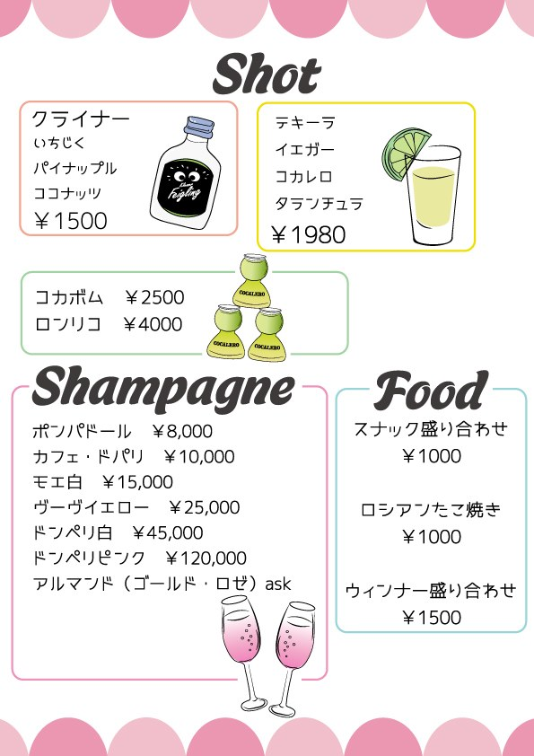
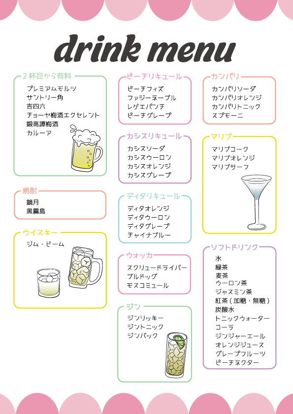
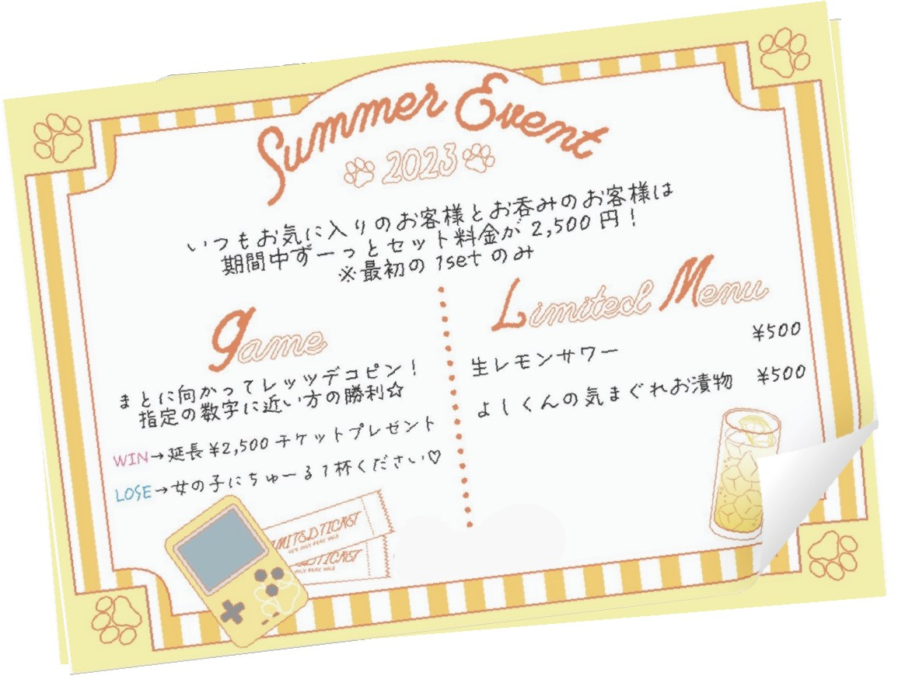
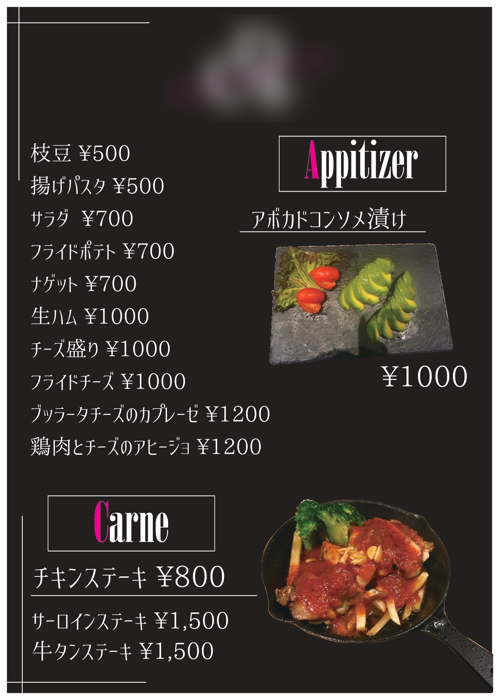
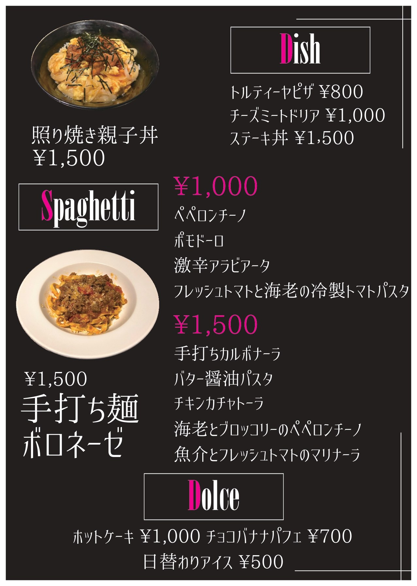

04
Graphic / 受注
2022 — 2024
飲食店のメニュー・
フライヤー
知人からの依頼で制作した、飲食店向けの印刷物です。いずれも実際に店頭で使われました。
01
パジャマがコンセプトの店


やわらかい雰囲気の店なので、角丸と波形のあしらい、手描き風のイラストでまとめました。品数が多いドリンクメニューは、カテゴリごとに枠で囲って色分けし、薄暗い店内でも一瞬で目的の欄にたどり着けるようにしています。
| 制作年 | 2022年2月 |
|---|---|
| 成果物 | ドリンクメニュー（見開き） |
| ツール | Illustrator |
02
猫耳がコンセプトの店

同じ業態でも、こちらは落ち着いた大人向け。紫と白の細い装飾罫で額縁のように組み、猫のシルエットを地紋に敷きました。同じ「ドリンクメニュー」でも、店のコンセプトが変われば作りは変わることを意識した仕事です。
あわせて夏のイベント用フライヤーも制作しました。こちらは黄色とストライプで一転して賑やかに。
| 制作年 | 2022年12月／2023年7月 |
|---|---|
| 成果物 | ドリンクメニュー、イベントフライヤー |
| ツール | Illustrator |
03
カラオケ＆ダーツのダイニングバー


黒地にピンクの差し色で、写真を使ったフードメニュー。料理写真を主役にするため文字は最小限にし、価格だけを大きく置きました。前の2件と違って写真が使える条件だったので、イラストに頼らない構成にしています。
| 制作年 | 2024年7月 |
|---|---|
| 成果物 | フードメニュー、ドリンクメニュー |
| ツール | Illustrator / Photoshop |
※ ご依頼元の店名・ロゴの表示は控えています（画像の一部にぼかしを入れています）。